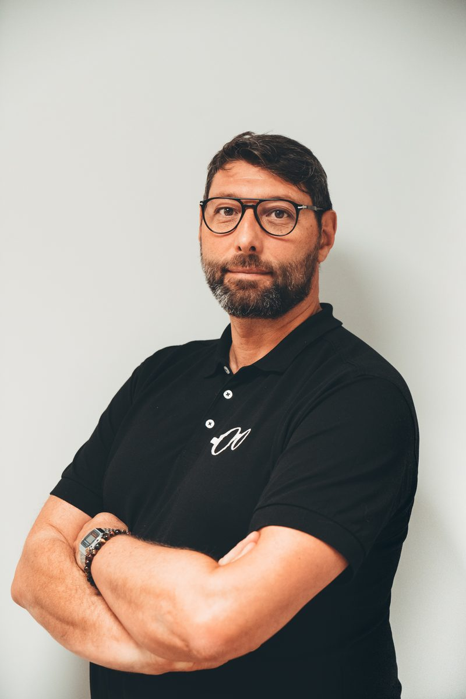
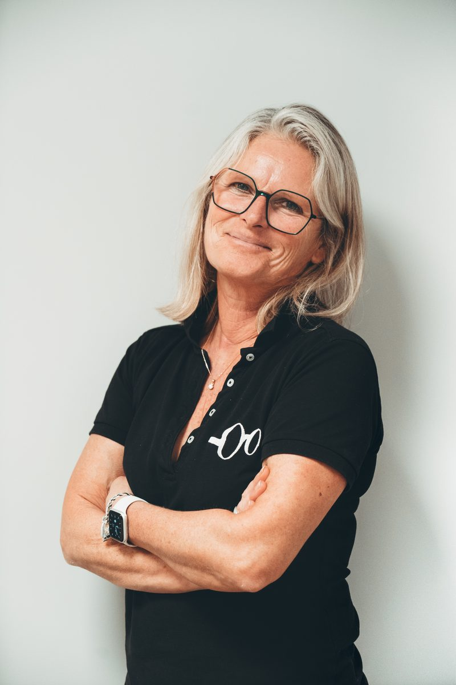
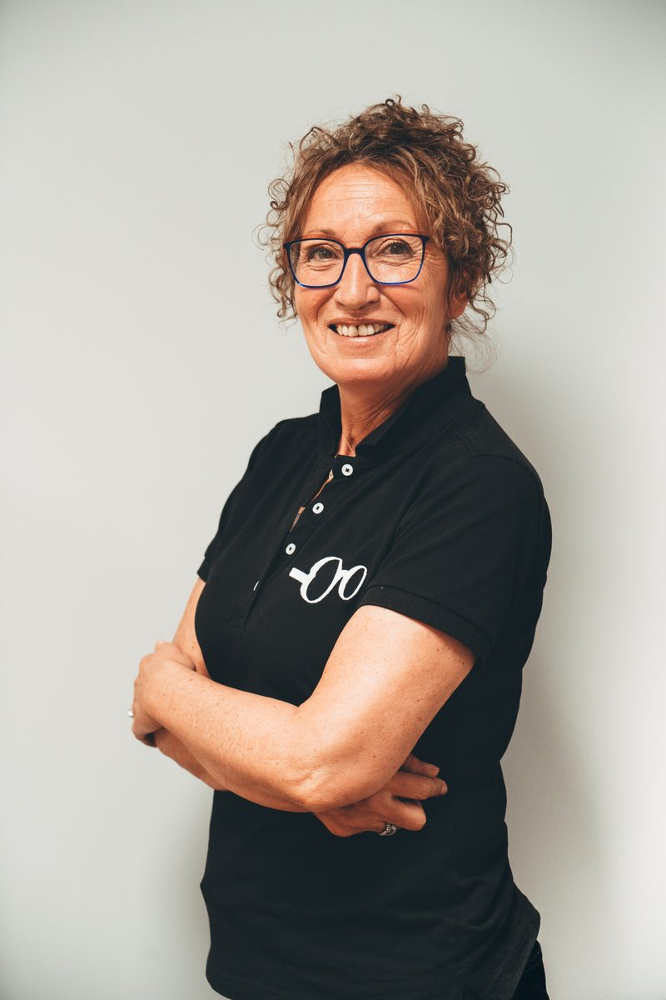
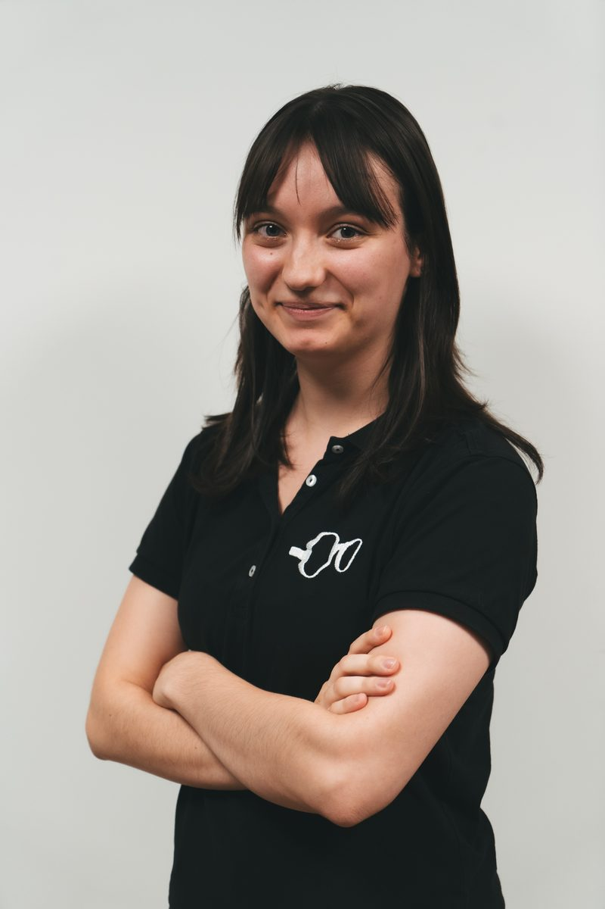
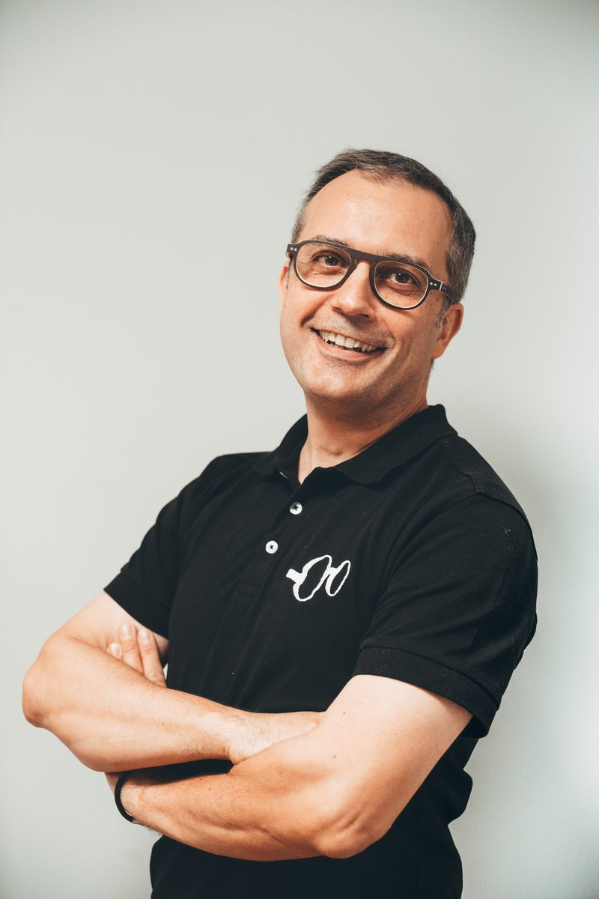

Nogent-le-Rotrou Siège
4,8 45 avis Google4 Rue Gouverneur
28400 Nogent-le-Rotrou
Horaires d'ouverture
Lundi9h30–12h30 · 14h–18h
Mardi – Vendredi9h–12h30 · 14h–19h
Samedi9h–12h30 · 14h–18h
Maison familiale d'opticiens depuis 1863 — 4 Rue Gouverneur, 28400 Nogent-le-Rotrou.
4 Rue Gouverneur
28400 Nogent-le-Rotrou
C'est ici que tout a commencé. En 1863, Auguste Pigeard, maître coutelier devenu opticien, ouvre son échoppe à Nogent-le-Rotrou. Six générations plus tard, le magasin de la rue Gouverneur est toujours le cœur de la maison : c'est ici que se trouve notre atelier, où naissent les lunettes sur mesure Pigeard, dessinées et fabriquées à la main, de A à Z.
Examen de la vue, lunettes de vue et de soleil, lentilles de contact, équipement des enfants avec Optikid, basse vision (DMLA et pathologies rétiniennes), lunettes à assistance auditive Nuance Audio, verres Nikon de fabrication française : l'équipe la plus étoffée de nos trois magasins vous accompagne, avec le tiers payant pour toutes les mutuelles.
Nous accueillons aussi les habitants de Margon, Arcisses, Souancé-au-Perche, Thiron-Gardais, Authon-du-Perche, Rémalard-en-Perche, Le Theil-sur-Huisne, Berd'huis et de tout le Perche.
Des visages que vous connaissez — et qui vous connaissent.







Bien plus que des lunettes : un accompagnement pour chaque regard.
Conçues de A à Z dans notre atelier de Nogent, faites main.
+02Les enfants, notre spécialité : un suivi adapté et rassurant.
+03Spécialistes des aides visuelles, DMLA et pathologies rétiniennes.
+04Des lunettes à assistance auditive invisible, discrètes et élégantes.
+05La technologie japonaise, de fabrication française.
+06De l'examen à l'ajustage : un vrai parcours d'opticien.
Trois adresses, une même famille, au cœur du Perche.